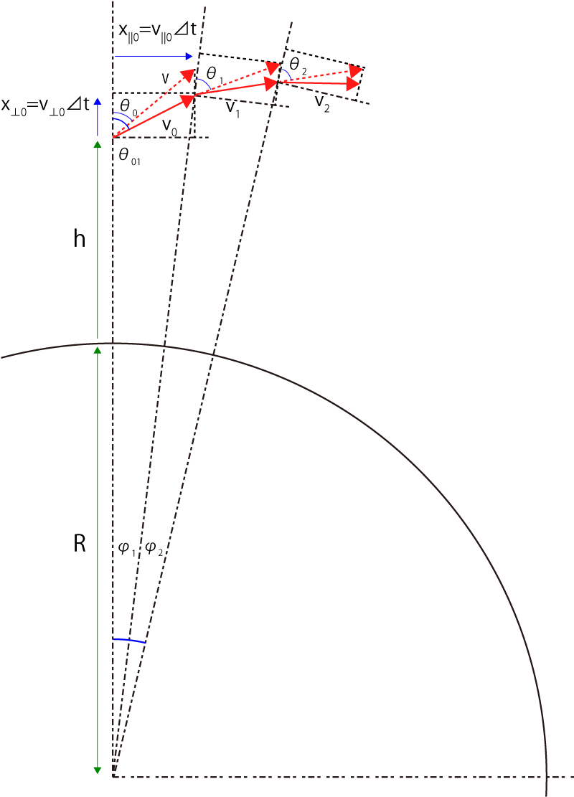

弾道計算 について-01
研究とは直接関係ない話ですが，iphone，ipadなどでは物理計算が得意で簡単に弾道のような計算を処理してくれます．
高校でも，ある角度，ある初期速度で打ち上げられた物体の軌道，を計算することを学びましたが，その基本は，
地面は水平
重力加速度は一定
の条件のもとでの計算でした．
しかし，ロケット，衛星の運動など記述する場合は，重力元である地球との距離，相対角度が刻一刻変化していくのでそのままでは適応できません．
ネットで色々調べてみたのですが，楕円軌道，になる，ぐらいの記述しかありませんでした．
そこで，実際に計算しようと思い立ちました．
解析的に厳密解を導き出すことは私の能力では難しそうなので，差分法（厳密に言うと違うかもしれませんが）で計算してみようと思い立ちました．
以下のようなモデルを考えます．
⊿ｔごとに，変位を計算していく
方法です．

ここで，前提として，
地表からｈの距離からｖの速度で角度θ0で発射
することにします．
角度の定義は，垂直を0度，としています（水平は90度ですね）
重力加速度は，
\( \Large F = mg = G \frac{M \ m}{R^2} \)
ですので，
\( \Large g = G \frac{M }{R^2} \)
となります．ここで，
G ： 万有引力定数 (6.67×10-11 m3kg-1s-2）
R ： 地球の半径（6.37×106m）
M ： 地球の質量（5.96×1024kg）
です．
・ステップ-01
ｖの速度で角度θ0で発射するので，
地表に水平な成分 ： v||
地表に垂直な成分 ： v⊥
に分けて考えていきます．
\( \Large v_{\parallel 0} = v \ sin \theta_0 \)
ですが，垂直成分は重力加速度がかかるので，
\( \Large v_{\perp 0} = v \ cos \theta_0 - g_0 \ \Delta t \)
\( \Large g_0 = G \frac{M }{(R+h)^2} \)
となります．
その時の変位量は，
\( \Large x_{\parallel 0} = v_{\parallel 0} \ \Delta t \)
\( \Large x_{\perp 0} = v_{\perp 0} \ \Delta t \)
となります．
最初のステップ，⊿ｔにおける速度，v0は，
\( \Large v_0 = \sqrt{ v_{\parallel 0}^2 + v_{\perp 0}^2} \)
角度，θ01は，
\( \Large \theta_{01} = tan^{-1} \frac{v_{\parallel 0}}{v_{\perp 0}} \)
となります．この際の地球中心からの角度，φ1，は
\( \Large \varphi_1 = tan^{-1} \frac{x_{\parallel 0}}{R+h+x_{\perp 0}} \)
となります．
新しい高度，h1は，
\( \Large h_1 = \sqrt{x_{\parallel 0}^2 + (R+h+x_{\perp 0})^2} -R \)
新しい座標は，
\( \Large x_1 = (R+h_1) sin \varphi_1 \)
\( \Large y_1 = (R+h_1) cos \varphi_1 \)
となります
・ステップ-02
次のステップは，地球の中心を通るベクトルとそれに対する垂直ベクトルで同様の計算を行います．
新しい角度，θ1は，v0がそのまま進み（赤点線），新しい地球の中心を通るベクトルとの角度なので，
\( \Large \theta_1 = \theta_{01}- \varphi_0 \)
となります．
あとは，ステップ-01，と同様な計算をおこない，
\( \Large v_{\parallel 1} = v_0 \ sin \theta_1 \)
ですが，垂直成分は重力加速度がかかるので，
\( \Large v_{\perp 1} = v_0 \ cos \theta_1 - g_1 \ \Delta t \)
\( \Large g_1 = G \frac{M }{(R+h_1)^2} \)
となります．
その時の変位量は，
\( \Large x_{\parallel 1} = v_{\parallel 1} \ \Delta t \)
\( \Large x_{\perp 1} = v_{\perp 1} \ \Delta t \)
となります．
最初のステップ，⊿ｔにおける速度，v1は，
\( \Large v_1 = \sqrt{ v_{\parallel 1}^2 + v_{\perp 1}^2} \)
角度，θ02は，
\( \Large \theta_{02} = tan^{-1} \frac{v_{\parallel 1}}{v_{\perp 1}} \)
となります．この際の地球中心からの角度，φ2，は
\( \Large \varphi_2 = tan^{-1} \frac{x_{\parallel 1}}{R+h+x_{\perp 1}} \)
となります．
新しい高度，h2は，
\( \Large h_2 = \sqrt{x_{\parallel 1}^2 + (R+h+x_{\perp 1})^2} -R \)
新しい座標は，
\( \Large x_2 = (R+h_2) \ sin (\varphi_1 + \varphi_2) \)
\( \Large y_2 = (R+h_2) \ cos (\varphi_1 + \varphi_2) \)
となります．ポイントは座標を求める際には，φの積算を使う点です．
・注意点
計算はこれを繰り返し続けて座標を計算していくだけなのですが，注意点としては，
アークタンジェントの計算
です．
θが90度を超えてしまうと，アークタンジェントの計算がややこしくなります．
\( \Large tan^{-1} \frac{v_{\parallel }}{v_{\perp }} > 0 \)
の場合は，問題ないのですが，
\( \Large tan^{-1} \frac{v_{\parallel }}{v_{\perp }} < 0 \)
の場合には，
\( \Large \theta_{0?} =tan^{-1} \frac{v_{\parallel }}{v_{\perp }} + \pi \)
と置き換える必要があります．
．
次のページに計算結果を示します．